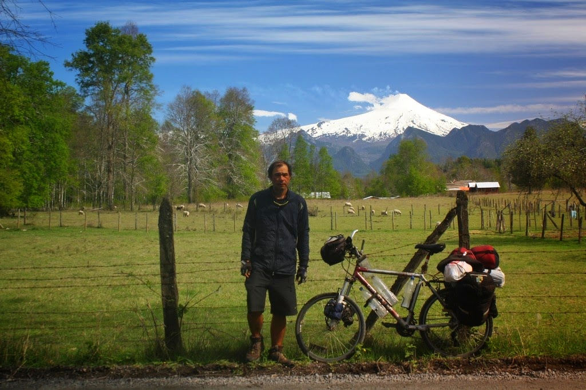
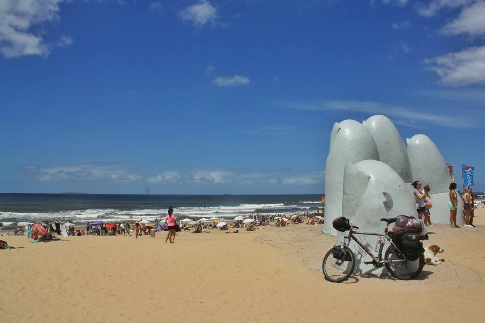

América do Sul
Pedalando 16.000km em 11 meses pelo Brasil, Argentina, Paraguai, Uruguai e Chile

Comecei o caminho em Pindamonhangaba-SP no dia 30 de abril de 2016 e terminei na cidade de Curitiba em março do ano seguinte.
A rota foi planejada dado os seguites lugares chave: Serra Catarinense e Gaúcha, ruínas Jesuítas, Buenos Aires, Mendoza, Santiago, Pucon, Bariloche, Carretera Austral, Glaciar Perito Moreno, Ushuaia. A partir daí tracei quais estradas eu iria passar pensando em outros lugares bonitos e estradas mais tranquilas. Esse é o tipo de viagem que não há um destino: a vivência do dia-a-dia era o que eu procurava.
Meu amigo Kolb pedalou comigo por 8 dias e depois segui sozinho.
Levei minha bagagem em alforges ou em suportes da bicicleta somando 25 quilos. Empacotei os seguintes itens:
- Mudas de roupas e agasalhos para o frio seguindo o conceito de camadas (segunda pele, fleece, corta-vento e capa de chuva)
- Kit de cozinha com uma panela, espiriteira a alcool, talheres.
- Ferramentas para conserto da bicicleta.
- Kit para acampamento com barraca, saco de dormir, isolante térmico inflável
- Eletrônicos como celular, câmera fotográfica, tablet e carregadores
- Comida conforme a necessidade e água.

Acampamento nos Aparados da Serra, Rio Grande do Sul

Canion Fortaleza em Cambará do Sul, Rio Grande do Sul
Canion Fortaleza em Cambará do Sul, Rio Grande do Sul

Catedral de Santo Angelo, Rio Grande do Sul

Ruinas Jesuitas em São Miguel das Missões, Rio Grande do Sul
Rio Uruguiai em San Javier, Uruguai

El caminito, Buenos Aires

Casa Rosada em Buenos Aires, Argentina

Trecho árido em Tanti, Argentina
Termas Cacheuta em Mendoza, Argentina

Travessia da cordilheira na Argentina - Paso Libertadores, Argentina

Cordilheira dos Andes em Mendoza, Argentina

Los Caracoles, Chile

Vulcão Villarica em Pucon, Chile
Lago Llanquihue e vulcão Osorno em Puerto Octay, Chile

Parque Nacional Puyehue, Chile

Caminho dos 7 lagos, Argentina

Caminho dos 7 lagos, Argentina
Vista do lago Nahuel Huapi em Bariloche, Argentina

Ruta 40 entre Bariloche e El Bolson, Argentina
Vertisquero Colgante, Chile

Cerejas no pé. Coihaique, Chile
Carretera Austral em Villa Cerro Castillo, Chile
Puerto Rio Tranquilo, trecho da Carretera Austral, Chile
Trilha para chegada em El Chalten a partir de O'Higgins, Chile
Casa del Ciclista em El Chalten, Argentina
Ruta 40 entre El Chalten e El Cafalate, Argentina
Glaciar Perito Moreno em El Calafate, Argentina
Camping El Eden em Piriapolis, Uruguai

Punta del Este, Uruguai